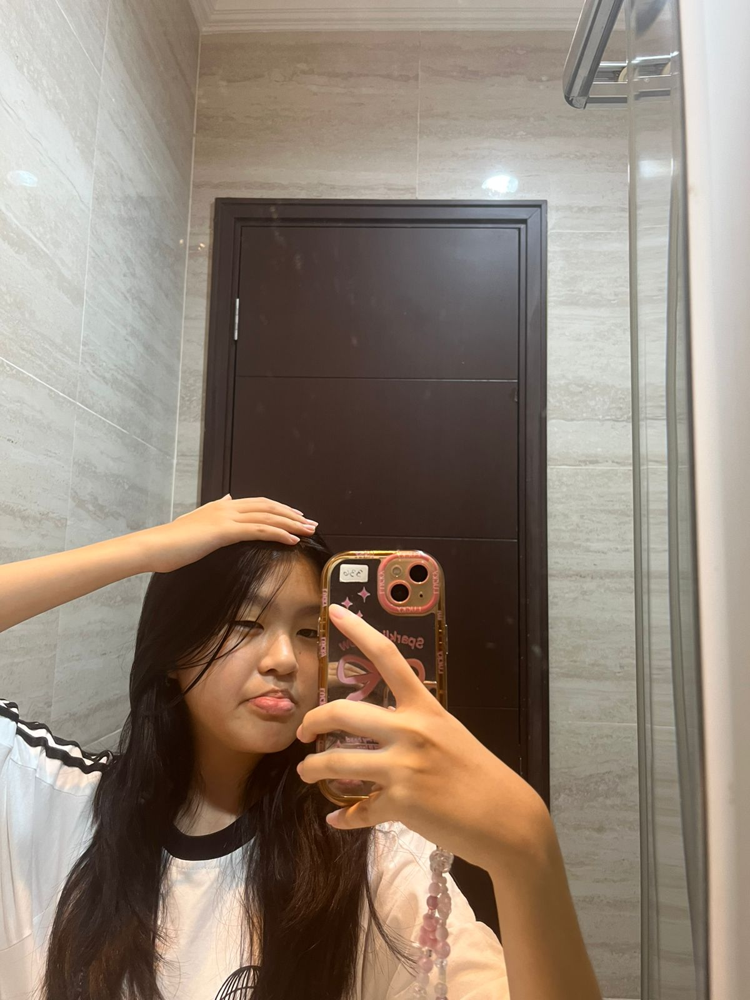

Profil Saya
Karakter Favorit
Yoann Chiara Vianney

Seorang pelajar yang antusias dan suka melakukan berbagai hal-hal baru
Umur: 13 tahun
Ulang Tahun: 14 November 2011
Sekolah: SMP Santa Laurensia Alam Sutera
Hobi: Melukis, membaca, dan bermain game
Instagram:@yoann.chiara